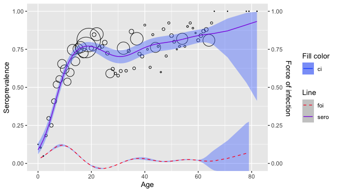

Penalized splines
Proposed model
Penalized splines
A general model relating the prevalence to age can be written as a GLM
\[ g(P(Y_i = 1| a _i)) = g(\pi(a_i)) = \eta(a_i) \]
- Where \(g\) is the link function and \(\eta\) is the linear predictor
The linear predictor can be estimated semi-parametrically using penalized spline with truncated power basis functions of degree \(p\) and fixed knots \(\kappa_1,..., \kappa_k\) as followed
\[ \eta(a_i) = \beta_0 + \beta_1a_i + ... + \beta_p a_i^p + \Sigma_{k=1}^ku_k(a_i - \kappa_k)^p_+ \]
-
Where
\[ (a_i - \kappa_k)^p_+ = \begin{cases} 0, & a_i \le \kappa_k \\ (a_i - \kappa_k)^p, & a_i > \kappa_k \end{cases} \]
In matrix notation, the mean structure model for \(\eta(a_i)\) becomes
\[ \eta = X\beta + Zu \]
Where \(\eta = [\eta(a_i) ... \eta(a_N) ]^T\), \(\beta = [\beta_0 \beta_1 .... \beta_p]^T\), and \(u = [u_1 u_2 ... u_k]^T\) are the regression with corresponding design matrices
\[ X = \begin{bmatrix} 1 & a_1 & a_1^2 & ... & a_1^p \\ 1 & a_2 & a_2^2 & ... & a_2^p \\ \vdots & \vdots & \vdots & \dots & \vdots \\ 1 & a_N & a_N^2 & ... & a_N^p \end{bmatrix}, Z = \begin{bmatrix} (a_1 - \kappa_1 )_+^p & (a_1 - \kappa_2 )_+^p & \dots & (a_1 - \kappa_k)_+^p \\ (a_2 - \kappa_1 )_+^p & (a_2 - \kappa_2 )_+^p & \dots & (a_2 - \kappa_k)_+^p \\ \vdots & \vdots & \dots & \vdots \\ (a_N - \kappa_1 )_+^p & (a_N - \kappa_2 )_+^p & \dots & (a_N - \kappa_k)_+^p \end{bmatrix} \]
FOI can then be derived as
\[ \hat{\lambda}(a_i) = [\hat{\beta_1} , 2\hat{\beta_2}a_i, ..., p \hat{\beta} a_i ^{p-1} + \Sigma^k_{k=1} p \hat{u}_k(a_i - \kappa_k)^{p-1}_+] \delta(\hat{\eta}(a_i)) \]
- Where \(\delta(.)\) is determined by the link function use in the model
Penalized likelihood framework
Refer to Chapter 8.2.1
Proposed approach
A first approach to fit the model is by maximizing the following penalized likelihood
\[\begin{equation} \phi^{-1}[y^T(X\beta + Zu ) - 1^Tc(X\beta + Zu )] - \frac{1}{2}\lambda^2 \begin{bmatrix} \beta \\u \end{bmatrix}^T D\begin{bmatrix} \beta \\u \end{bmatrix} \tag{1} \end{equation}\]Where:
\(X\beta + Zu\) is the linear predictor (refer to ??)
\(D\) is a known semi-definite penalty matrix (Wahba 1978), (Green and Silverman 1993)
\(y\) is the response vector
1 the unit vector, \(c(.)\) is determined by the link function used
\(\lambda\) is the smoothing parameter (larger values –> smoother curves)
\(\phi\) is the overdispersion parameter and equals 1 if there is no overdispersion
Fitting data
To fit the data using the penalized likelihood framework, specify framework = "pl"
Basis function can be defined via the s parameter, some values for s includes:
"tp"thin plate regression splines"cr"cubic regression splines"ps"P-splines proposed by (Eilers and Marx 1996)"ad"for Adaptive smoothers
For more options, refer to the mgcv documentation (Wood 2017)
data <- parvob19_be_2001_2003
pl <- penalized_spline_model(data$age, status = data$seropositive, s = "tp", framework = "pl")
pl$info
#>
#> Family: binomial
#> Link function: logit
#>
#> Formula:
#> spos ~ s(age, bs = s, sp = sp)
#>
#> Estimated degrees of freedom:
#> 6.16 total = 7.16
#>
#> UBRE score: 0.1206458
plot(pl)
Generalized Linear Mixture Model framework
Refer to Chapter 8.2.2
Proposed approach
Looking back at (1), a constraint for \(u\) would be \(\Sigma_ku_k^2 < C\) for some positive value \(C\)
This is equivalent to choosing \((\beta, u)\) to maximise (1) with \(D = diag(0, 1)\) where \(0\) denotes zero vector length \(p+1\) and 1 denotes the unit vector of length \(K\)
For a fixed value for \(\lambda\) this is equivalent to fitting the following generalized linear mixed model Ngo and Wand (2004)
\[ f(y|u) = exp\{ \phi^{-1} [y^T(X\beta + Zu) - c(X\beta + Zu)] + 1^Tc(y)\},\\ u \sim N(0, G) \]
- With similar notations as before and \(G = \sigma^2_uI_{K \times K}\)
Thus \(Z\) is penalized by assuming the corresponding coefficients \(u\) are random effect with \(u \sim N(0, \sigma^2_uI)\).
Fitting data
To fit the data using the penalized likelihood framework, specify framework = "glmm"
data <- parvob19_be_2001_2003
glmm <- penalized_spline_model(data$age, status = data$seropositive, s = "tp", framework = "glmm")
#>
#> Maximum number of PQL iterations: 20
#> iteration 1
#> iteration 2
#> iteration 3
#> iteration 4
glmm$info$gam
#>
#> Family: binomial
#> Link function: logit
#>
#> Formula:
#> spos ~ s(age, bs = s, sp = sp)
#>
#> Estimated degrees of freedom:
#> 6.45 total = 7.45
plot(glmm)